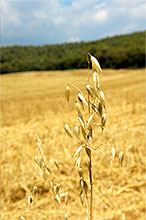
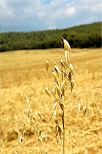

Masia Can Borrell
Sant Cugat del Vallès
Tel.: 93 692 97 23
93 691 06 05
Fax: 93 692 40 57
 |
La masia de Can Borrell es troba en un entorn privilegiat. Situada al terme municipal de Sant Cugat del Vallès, i amb una extensió de 216 hectàrees és en ple cor del Parc Natural de Collserola.
  
Aquesta bella masia gaudeix d'un paisatge forestal i agrícola que ens fa retrobar amb la natura i ens fa pensar que som ben lluny de l'àrea metropolitana, tot i ser a escassos vint minuts de Barcelona.
Carretera d'Horta a Cerdanyola (BV-1415), km 3 - 08171 Sant Cugat del Vallès
|
|